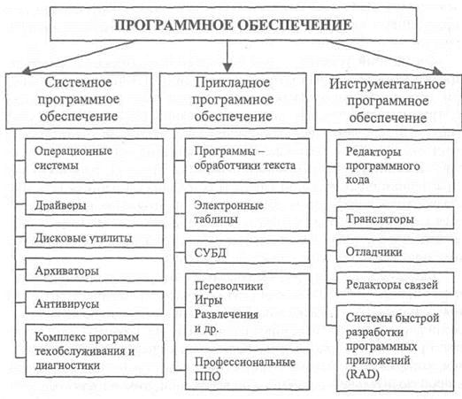
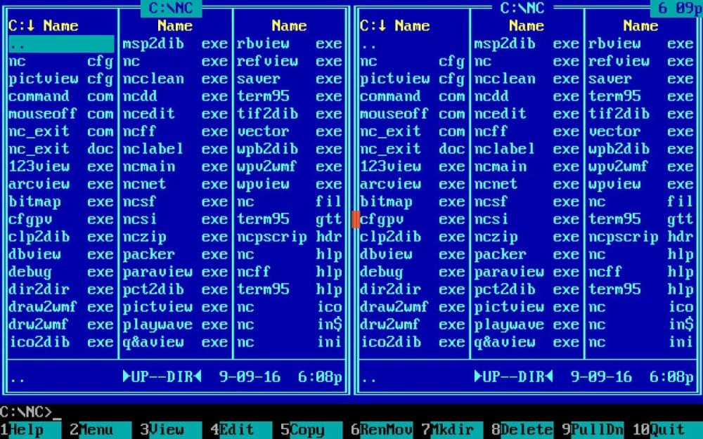
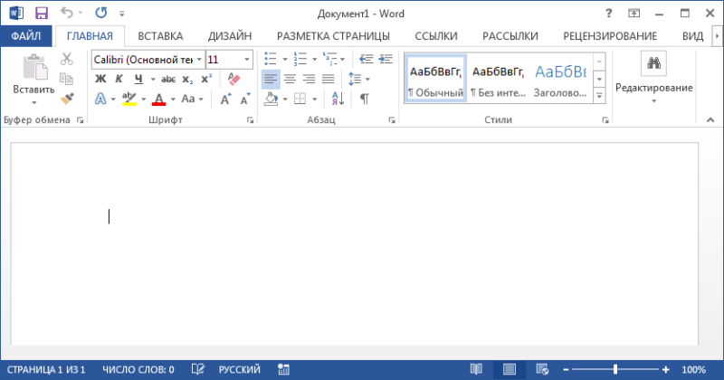

§ 8. Формула компьютера, интерфейс
8.1. Формула компьютера
Компьютер = аппаратура + программы. Аппаратура представляет собой «жесткую» часть компьютера и по-английски называется соответственно — hard. Программы — это «мягкая» часть компьютера, поанглийски называется soft. Программы находятся в форме файлов. Итак, получаем эквивалентную формулу компьютер = hard + soft. Исходя из данной формулы мы можем понять, что программа является важной неотъемлемой частью компьютера.
Программа - это последовательность команд, которую выполняет компьютер в процессе обработки данных.
Программы делятся на операционные системы, прикладное и инструментальное программное обеспечение. (рис. 25)
Рис. 25. 
8.2. Интерфейс, его виды
Интерфейс компьютерной программы — это ее внешний вид на экране дисплея, включающий ее оформление, вид и расположение элементов управления работой этой программы.
Текстовый интерфейс состоит только из символов, каждый из которых находится в какой-то текстовой строке и столбце на экране монитора. В этом интерфейсе экран разбит 25 строками и 80 столбцами на 2000 ячеек, в каждой из которых может находиться один символ.
Рис. 26. Текстовый интерфейс 
Графический интерфейс гораздо богаче текстового, он состоит из окошек и кнопок, изображенных на экране. В окошках выполняются программы, а кнопки управляют их выполнением. Здесь нет никаких текстовых ячеек, графическое изображение строится с точностью до пикселя.
Рис. 27. Графический интерфейс 
§9. Операционные системы
9.1. Операционная система, ее компоненты
Операционной системой (ОС) называется комплект программ, которые совместно управляют ресурсами системы и процессами, использующими эти ресурсы. Выполнение любой программы на компьютере происходит под управлением ОС.
Программы, из которых состоит ОС, делятся на следующие три категории:
1. Ядро ОС, выполняющее основные функции ОС (в основном загрузку ее компонентов и поддержку выполнения компьютерных программ, в том числе и этих компонентов).
2. Программу управления файлами и директориями, служащую для классификации и просмотра информации, с которой имеет дело пользователь на компьютере.
3. Драйверы, которые позволяют ОС работать с аппаратурой: периферийными устройствами (монитор, клавиатура, мышь, принтеры и т. д.) и устройствами, входящими в состав системного блока (видеокарта, жесткий диск и т. д.). Без драйверов невозможно функционирование никаких компьютерных устройств.
9.2. Виды операционных систем
Наиболее распространены в России ИБМ-совместимые ПК с ОС от фирмы Микрософт серии Windows, имеющие графический оконный интерфейс. ДОС — прежняя версия этой ОС с текстовым интерфейсом.
Профессионалы в Интернете широко используют и в России ОС UNIX («юникс»). Ядро ОС UNIX имеет текстовый интерфейс, причем некоторые ее версии обладают графическими оконными оболочками.
Компьютеры Mac, или Макинтош, на которых установлена еще одна ОС — от фирмы Apple — широко используются на западе в учебных заведениях и дома. Она имеет только графический интерфейс.
§ 10. Прикладные программы
10.1. Приложение
Прикладная программа, или приложение, позволяет пользователю делать то, ради чего он использует компьютер, т. е. применять компьютер в разных областях человеческой деятельности. Прикладная программа выполняется на компьютере под управлением ОС.
Прикладные программы, в свою очередь, можно разделить на два класса: 1) программы-автоматы; 2) программы-инструменты.
10.2. Программы-автоматы
Программы-автоматы — это прикладные программы, где пользователь эксплуатирует алгоритмы и данные, а также способы классификации данных и их просмотра, созданные другими людьми.
С помощью этих программ пользователь не создает новой информации. Это самые легкие в использовании программы, не требующие никаких специальных знаний, в том числе игры.
Приведем три разновидности программ-автоматов: обучающие, игры и базы знаний.
10.3. Обучающие программы
Обучающие программы помогают пользователю обучиться какой-нибудь области знания (языки, набор на клавиатуре, математика и т. д.).
Современные обучающие программы обычно являются мультимедийными, включая не только звук и работу с микрофоном, но и отрывки из видеофильмов.
10.4. Игры
Игры используются для отдыха за компьютером, спортивных соревнований, тренировки логического мышления, тренажерной тренировки определенных навыков и умений, а также обучения.
Различают следующие классы игр: логические, стратегические, квесты (бродилки), симуляторы, аркады (стрелялки).
10.5. Базы знаний
Базы знаний — самая разнообразная информация, организованная в логические структуры. Частный случай таких программ — экспертные системы, которые помогают специалистам обрабатывать специальные данные и делать заключения. Эти программы легче перечислить по областям знаний: медицинские, математические, статистические и т. д.
Сайт — организация информации в пространстве Интернета, представляющая собой ряд связанных между собой страниц одной тематики.
10.6. Программы-инструменты
Программы-инструменты — это прикладные программы, с помощью которых пользователь создает новую авторскую информацию, хранящуюся в соответствующих файлах.
Программы-инструменты также делятся на два класса:
1) редакторы — программы для создания, редактирования, просмотра и изменения новой информации, за исключением компьютерных программ;
2) системы программирования , или языки программирования — программы для создания компьютерных программ.
Рассмотрим три вида редакторов. (см. §10. п. 7-9)
10.7. Текстовые редакторы
Текстовые редакторы служат для создания разнообразных текстов на естественных и компьютерных языках.
Развитые текстовые редакторы с возможностями форматирования текста называются текстовыми процессорами.
Мощные текстовые процессоры используются только для верстки книг и называются издательскими системами.
10.8. Графические и мультимедийные редакторы
Графические редакторы обрабатывают графическую информацию, состоящую из пикселей или формул, позволяют добавлять в нее графические эффекты. Они также обрабатывают анимационную информацию, состоящую из последовательных кадров графической информации..
Мультимедийные редакторы имеют дело с полной коллекцией мультимедиа, в том числе звуком и видео. Звуковые редакторы позволяют визуально просматривать оцифрованный звук, редактировать и прослушивать его. Видео-редакторы занимаются с оцифрованным видео: осуществляют покадровый просмотр, редактирование и добавление видео-эффектов, монтаж и озвучивание видео-информации.
10.9. Редакторы баз данных
Редакторы баз данных, или системы управления базами данных (СУБД), занимаются базами данных (БД), т. е. самой разнообразной информацией, организованной в логические структуры.
Их разновидностью являются табличные редакторы, которые создают и обрабатывают числовые таблицы, в которых хранится исключительно числовая информация и формулы для обработки этих чисел.
Еще одной разновидностью СУБД являются специальные программы, которые легче перечислять по областям знаний: математические, статистические, бухгалтерские и т. д. Эти программы накапливают и редактируют данные в тех специальных областях знания, где они применяются.
10.10. Языки программирования
Системы программирования, или языки программирования — это прикладные программы, которые позволяют программисту создавать любые компьютерные программы.
Этими компьютерными программами являются:
1) прикладные программы, в том числе языки программирования;
2) утилиты;
3) вирусы
4) операционные системы.
Самые распространенные языки программирования: Бейсик, Паскаль, Си.